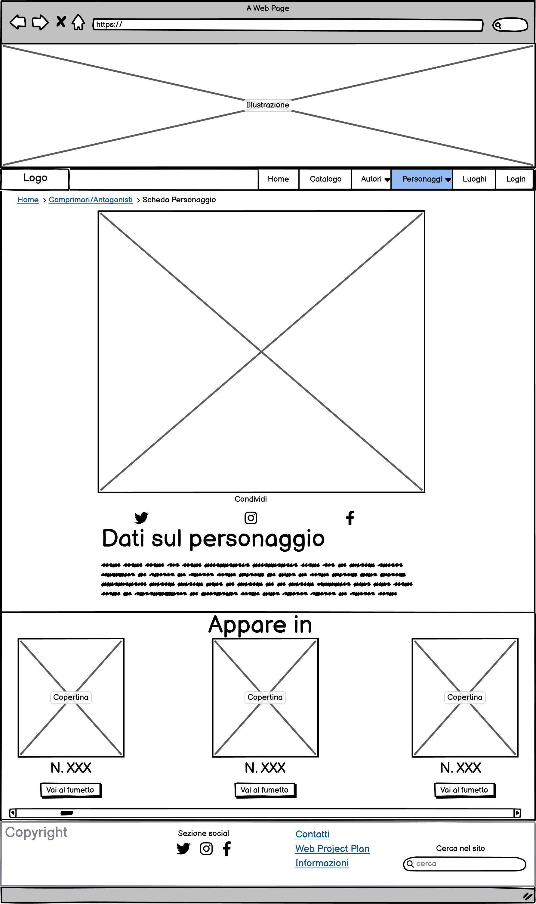
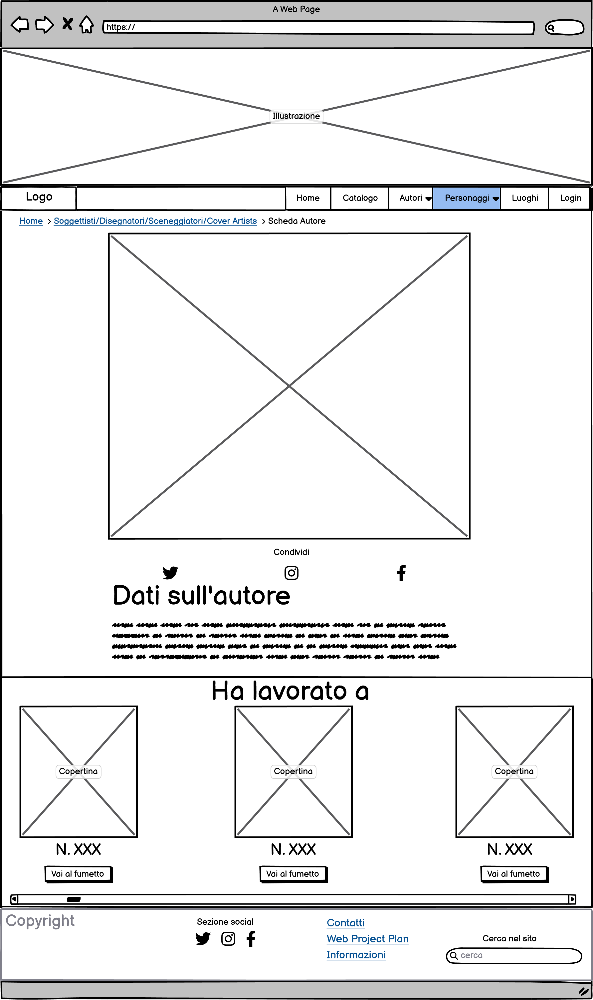

Indice
1. Idea (Abstract)
Realizzare una collezione digitale sui primi 150 numeri seriali di Dylan Dog, ai fini di analizzare l'evoluzione del personaggio, delle storie e dei comprimari, in questo arco temporale di circa 13 anni. Sarà permesso il browsing nella collezione sia per temi e soggetti; in aggiunta saranno presenti strumenti di navigazione temporale e geografica così da poter inquadrare al meglio il soggetto. Quando si analizzeranno i singoli item, cioè i fumetti, si visualizzeranno i metadati relativi e sarà permesso sfogliarli. Il progetto guarda agli appassionati di fumetto e di Dylan Dog come utenti ideali pur essendo fruibile anche a novizi e a semplici interessati.
2. Brief
2.1 Finalità
Il progetto si occupa di creare una collezione digitale dei primi 150 numeri seriali del noto fumetto italiano Dylan Dog. L'obbiettivo è costruire una collezione per poter studiare l'evoluzione della collana nell'arco di 13 anni di tempo.
2.2 Pubblico
Il pubblico principale sono gli appassionati di fumetto e di Dylan Dog che useranno il sito per approfondire le loro conoscenze. Ma è previsto anche un audience secondaria che sono i curiosi o novizi con la voglia di conoscere la materia trattata. L'accesso sarà sia come ospiti sia come utenti registrati, nel caso degli ospiti possono solamente visualizzare il catalogo e i vari item, gli utenti registrati potranno anche avere una propria libreria di elementi salvati preferiti e lasciare commenti.
2.3 Accesso
La collezione si baserà principalmente sul testo e le immagini. In questo modo si terrà un sito leggero che possa essere visualizzato sia su personal computer che su device portatili come smartphone e tablet. La risorsa web ha un design semplice adatto a tutti i dispositivi inoltre con l'utilizzo di componenti bootstrap con natura responsive permette che la pagina si adatti all'area di visualizzazione permettendo una navigazione sempre gradevole, per quanto lo strumento principale rimangano i personal computer.
2.4 Contenuti e Dati
Le immagini sono state estratte dai numeri originali e reperite su internet tramite l'utilizzo di Google immagini. Alcune sono state ridimensionate e adattatate con l'uso del software GIMP e della web application Photopea. Come contenuto originale è stato creato il logo utilizzato nel sito sia come favicon.
3. Benchmark
3.1 Analisi di mercato
Non esistono siti che offrono un catalogo dei soli primi 150 numeri di Dylan Dog, permettendo un filtro sia per autori che personaggi coinvolti, inoltre nessuno mette in rilevanza i luoghi dove si svolgono le storie, in realtà molto importanti. Oltretutto la mia risorsa web fornisce la possibilità di lettura per un'analisi approfondita delle storie e dell'evoluzione del personaggio. Esistono alcuni siti che puntano a proporre un catalogo completo ma senza dare la possibilità di lettura e osservazione dei vari fumetti.
Uno di questi è https://www.cravenroad7.it che però ha un design molto antiquato e vari elementi che non funzionano. Altri sito invece molto più funzionale è https://www.comicsbox.it/serie/DYLANDOG che per quanto presenti alcuni problemi nella navigazione fornisce un catalogo completo ma senza la possibilità di filtrare.
Invece un sito che ha componenti e servizi molto interessanti da cui prendere ispirazione è https://www.sergiobonelli.it che nel catalogo dello store presenta un servizio di filtri abbastanza elaborato potendo filtrare non solo per collana ma anche per data, ordine di uscita e anche per personaggio. Oltre a questo presenta dei dropdown button nella navigazione principale che aiutano a navigare in maniera molto più comoda. Dal punto di vista di servizi troviamo anche nella versione mobile la sezione dei filtri che diventa un accordion innestato dentro un altro, sicuramente una buona opzione per permettere una visualizzazione da dispositivi mobile sempre efficace
3.2 Descrizione dei concorrenti
I tre siti concorrenti che voglio descrivere sono:
Il primo https://www.cravenroad7.it nasce dall'omonimo forum per riunire appassionati di Dylan Dog e divenirne un punto di incontro. Il sito non è aggiornato alle tecnologie moderne e si presenta con un'architettura e design molto antichi oltre al fatto che vari link non funzionino rimandando a pagine cancellate e/o spostate. Parlando dell'architettura nella homepage troviamo una testa contenete l'immagine logo sia del sito che del forum e dei canali di metanavigazione, scendendo abbiamo il canale di navigazione principale con alcuni dropdown button che portano a canali di navigazione secondaria. Come altra sezione troviamo un altro canale di navigazione legato a una sezione in cui sono messi in evidenza alcuni articoli che scorrono come un carosello, molto interessante come metodo per far interagire l'utente. In basso a sinistra troviamo una sezione che raccoglie tutti gli articoli più recenti e sempre in basso però a destra abbiamo una sezione con un vari box che illustrano le ultime uscite, i commenti e gli articoli popolari. In fondo troviamo degli elementi di pagination e un footer con alcuni elementi di metanavigazione e di copyright
Il secondo sito è quello di https://www.comicsbox.it/serie/DYLANDOG che come già detto non si basa solo su Dylan Dog ma anche su altri fumetti sia italiani che esteri perciò analizzeremo la loro pagina al livello catalogo. Nella testata del sito troviamo il logo e un piccolo form per registrarsi, sotto c'è un barra di navigazione primaria con insieme un form di ricerca. Poi troviamo una sezione con un titolo, un immagine che cambia ogni volta che si ricarica la pagina, un bottone che rimanda all'acquisto e una descrizione generale del fumetto. In seguito troviamo una sezione organizzata come una tabella che raccoglie i vari numeri catalogati con: Titolo, Numero, Serie e Data. Ogni riga ha un link che rimanda alla scheda del numero selezionato. In fondo troviamo degli elementi di pagination e il footer che contiene il copyright, nessuna metanavigazione e alcune statistiche.
Il terzo sito è https://www.sergiobonelli.it, che è l'editore e distributore ufficiale, quindi, è il sito che è stato realizzato con più attenzione. Analizzeremo la pagina dello store che funge da catalogo. Questa è la pagina di catalogo dello store sia per Dylan Dog che per altri fumetti editi sempre da bonelli editore. Nella testata in alto troviamo oltre al logo a destra e sinistra dei canali di metanavigazione soprattutto riguardanti l'accesso utente o la parte social. Sotto troviamo la sezione di navigazione principale con vari dropdown button che portano ad ulteriori canali di navigazione secondaria. A sinistra abbiamo la sezione dei filtri che è molto elaborata, infatti troviamo la possibilità di filtrare per albo o per libro. Altri filtri che troviamo sono quelli per Personaggio, per Collana, possibilità di visualizzare in un certo intervallo di date e in un certo intervallo di numeri. A destra troviamo la griglia per visualizzare i vari item facenti parte del catalogo: ognuno di essi ha un immagine, il titolo e la data di uscita. Il tutto è ampiamente interattivo in modo che l'utente possa essere supportato nella esplorazione. Troviamo anche un menù dropdown per decidere se ordinare dal più al meno recente o viceversa; inoltre troviamo in alto il numero di risultati trovati e il riassunto dei filtri applicati. In fondo troviamo lo strumento di pagination per scorrere tra le pagine del catalogo e una sezione in cui sono consigliati alcuni fumetti. Il footer è caratterizzato dal logo, vari link di metanavigazione e le informazioni social.
4. Struttura
4.1 Mappa concettuale
L'idea generale è quella di voler rappresentare i temi fondamentali del fumetto di Dylan Dog. Questi sono i suoi personaggi che possono essere divisi in Antagonisti e Comprimari. I Comprimari possono essere fissi, quindi compaiono in tutte le storie altrimenti possono essere occasionali, compaiono in una sola storia. Mentre gli antagonisti possono essere umani o mostri. Altro tema importante è l'anno di svolgimento delle vicende e anche i luoghi in cui le varie vicende si svolgono essendo che possono differire di molto e questo porta a storie diverse. L'ultimo tema su cui voglio ragionare è il fatto che essendo un'opera creata da artisti di tipologia diversa è importante poterla esplorare anche secondo questo criterio per mettere in evidenza i vari stili e stilemi.
4.2 Schema delle dipendenze

In questo schema delle dipendenze troviamo in cima la homepage che è la pagina di livello più elevato in cui troviamo la presentazione dei contenuti e i sistemi di navigazione principale. Al secondo livello troviamo le varie pagine di secondo livello: Catalogo, le due raccolte per i personaggi, le quattro pagine di raccolta dei vari autori, la pagina dei luoghi e quella di login.
La pagina Catalogo è il catalogo principale della collezione da cui poi possiamo accedere ai singoli item; le due pagine di raccolta dei Comprimari e degli Antagonisti sono dei mini-cataloghi che servono per esplorare in maniera differente la collezione, da queste dopo aver scelto un personaggio si può accedere alla scheda relativa che contiene i fumetti collegati. La stessa cosa si trova per le varie mini-raccolte dei vari autori. Poi sullo stesso livello abbiamo la pagina luoghi che presenta una mappa interattiva con cui andare direttamente a uno dei fumetti della raccolta direttamente dal luogo in cui è ambientato. E infine abbiamo la pagina di login in cui l'utente può accedere per poi andare alla sua pagina personale.
Le pagine di mini-raccolta degli autori e dei personaggi ci portano alle schede dedicate e sullo stesso livello troviamo anche la pagina personale dell'utente e un livello sotto la pagina che contiene tutti gli elementi preferiti e salvati dall'utente.
Nell'ultimo livello abbiamo la scheda dell'item in cui troviamo tutte le informazioni relative all'item un riassunto e il sistema per poter sfogliarlo e leggerlo.
4.3 Categorie Descrittive
Di seguito sono riportate le possibili categorie descrittive di un item della collezione, in particolare il N°1 della collana:
-
Titolo: L'alba dei morti viventi
-
Autore (Soggettista): Tiziano Sclavi
-
Autore (Sceneggiatore): Tiziano Sclavi
-
Autore (Disegnatore): Angelo Stano
-
Autore (Cover Artist): Claudio Villa
-
Descrizione: Il passo incerto, la mano gelida e un'insaziabile fame di carne viva. I morti escono dalla tomba per venire a farci visita; ne sa qualcosa Sybil Browning, sfuggita per un pelo alle fauci del marito defunto. L'unico che può aiutarla è un bizzarro detective che suona il clarinetto e coltiva una passione per mostri e misteri; il suo nome è Dog, Dylan Dog. L'Indagatore dell'Incubo e l'inseparabile Groucho seguono il passo degli zombi fino al villaggio di Undead, dove li attende il mefistofelico Xabaras.
-
Soggetto (Numero): 1
-
Soggetto (Luogo): Undead
-
Soggetto (Comprimario): Sybil
-
Soggetto (Comprimario): Groucho
-
Soggetto (Antagonista): Xabaras
-
Editore: Sergio Bonelli Editore
-
Data: 1986/11/01
-
Tipo: Fumetto
-
Formato: 16x21 cm, b/n
-
Identificatore: 977112158000930001
-
Lingua: It
5. Layout
5.1 Wireframe index

Questo è il wireframe della pagina home. Dal punto di vista dell'archittettura troviamo una testata con un immagine e al di sotto la sezione di navigazione con una navbar che si occupa della navigazione primaria. All'interno della navbar troviamo dei dropdown button che se premuti permettono di accedere ai canali di navigazione secondaria.
Scendendo troviamo il main che è diviso in 5 sezioni logiche. La prima è la sezione che presenta il progetto e permette tramite un bottone un rapido accesso al catalogo, cioè una navigazione contestuale. Sotto si trova la sezione che presenta il personaggio e fumetto di Dylan Dog.
La terza sezione è quella che permette di esplorare rapidamente il catalogo utilizzando alcuni personaggi presenti nelle storie. Il tutto è gestito tramite un carousel di immagini che l'utente può scorrere e in aggiunta selezionare la scheda relativa al personaggio. Esiste un pulsante che permette di andare direttamente al catalogo applicando come filtro il personaggio relativo.
La quarta sezione contiene un grafo per poter osservare le relazioni tra i vari personaggi. Nella quinta troviamo i numeri consigliati del mese, cioè una selezione di tre numeri che ogni mese cambia e permette di recarsi direttamente alla scheda interessate.
In fondo troviamo il footer con il copyright, i vari collegamenti ai social, i link di metanavigazione e anche un form che permette di esplorare il sito.
5.2 Wireframe catalogo

Questo è il wireframe del catalogo della collezione in cui possiamo trovare i vari item e ordinarli. Nella testata del sito troviamo l'immagine e poco sotto la navbar in cui il canale del catalogo è evidenziato. Nel corpo del documento possiamo trovare le breadcrumbs che permettono di tornare alla home.
Il corpo è diviso in due sezioni: in quella a sinistra troviamo una colonna con tutti i filtri cioè un accordion con 8 item contenuto in un accordion più grande, questo è stato fatto per facilitare la visualizzazione da dispositivo mobile e anche per non riempire la pagina, poichè i filtri per categorie applicabili sono molti. Troviamo la possibilità di filtrare per uscita, quindi dare un limite cronologico ai fumetti visualizzati, per numero, ordinare dal più al meno recente e viceversa. Quando vogliamo filtrare per Disegnatori, Sceneggiatori, Soggettisti, Cover Artists, Comprimari e Antagonisti possiamo applicare un filtro aprendo l'accordion e applicare uno o più filtri tramite delle checkbox.
Nella sezione a destra troviamo gli items organizzati su delle righe, che possono contenere ognuna al massimo 3 item, questo è stato deciso per favorire la visualizzazione su tutti i dispositivi. Ogni item ha indicato gli autori che ci hanno lavorato e un pulsante che porta all'item.Sotto troviamo un sistema di pagination per poter scorrere il catalogo. In fondo troviamo il footer con la metanavigazione e il copyright.
5.3 Wireframe item

Questo è il wireframe della scheda dell'item. Nella testata troviamo, come nella home e nei wireframe precedenti, l'immagine in alto e la navbar per la navigazione primaria. Poco sotto ci sono le breadcrumbs che permettono all'utente di orientarsi e sono completamente navigabili.
Nel corpo del documento troviamo una sezione a sinistra in cui abbiamo un carousel che permette di sfogliare il fumetto e di poter leggere le varie pagine. Sotto c'è una sezione con i vari pulsanti per condividere sui social e i dati descrittivi dell'item in cui per ogni autore c'è un link che rimanda alla pagina del sito ad essa associata. A fianco troviamo i fumetti collegati per autori e/o personaggi all'item che si sta analizzando. Questi variano per ogni item e ognuno ha un pulsante che rimanda alla relativa pagina del sito. Sul fondo troviamo sempre il footer con il copyright, i social e la metanavigazione.
5.4 Wireframe Raccolta Autori

Qui abbiamo il wireframe per il layout di varie pagine, in particolare di quelle che si occupano della raccolta di uno dei vari ruoli autoriali. Nella testata abbiamo sempre l'immagine e la navigazione principale, la navbar.
Nel corpo del documento troviamo una sezione in cui viene spiegata il ruolo dell'autore nella creazione del fumetto. Poi sotto troviamo le varie immagini con il nome e un pulsante che rimanda alla scheda, permettendo all'utente di visitarla. Sul fondo è presente un sistema di pagination così da permettere all'utente di esplorare queste mini-raccolte. Nel footer del documento troviamo il copyright e i link di metanavigazione.
5.5 Wireframe Raccolta Personaggi

Qui abbiamo il wireframe per il layout della raccolta dei personaggi Comprimari o Antagonisti, differisce a quello degli autori per la presenza delle tabs che ci permettono di dividere tra personaggi occasionali o ricorrenti. Nella testata abbiamo sempre l'immagine e la navigazione principale, la navbar.
Nel corpo del documento troviamo una sezione in cui viene spiegata il ruolo del personaggio nelle storie. Poi sotto troviamo le varie immagini con il nome e un pulsante che rimanda alla scheda, permettendo all'utente di visitarla. Sul fondo è presente un sistema di pagination così da permettere all'utente di esplorare queste mini-raccolte. Nel footer del documento troviamo il copyright e i link di metanavigazione.
5.6 Wireframe Scheda Personaggio
Nel wireframe della scheda per i personaggi troviamo la testata in cui abbiamo l'immagine e la navbar come navigazione principale in cui è evidenziato il canale corrente. Nel corpo troviamo le breadcrumbs con i link cliccabili poi un immagine del personaggio in questione e sotto i pulsanti social per condividere e una sezione di testo in cui si racconta una piccola biografia del personaggio. Più in basso abbiamo un sezione in cui sono organizzati in orizzontale i fumetti in cui appare il personaggio in questione. E' presente una scrollbar per poterli visualizzare spostando la barra. Ogni fumetto ha gli autori e un bottone che rimanda a quella scheda. Nel footer troviamo il copyright e la metanavigazione.
5.7 Wireframe Scheda Autore
Nel wireframe della scheda per gli autori abbiamo la testata dove c'è l'immagine e la navbar che assurge al ruolo di navigazione principale in cui è evidenziato il canale corrente. Nel corpo troviamo le breadcrumbs con i link cliccabili sotto abbiamo una sezione che contiene l'immagine dell'autore in questione e sotto i pulsanti social per condividere e una sezione di testo in cui si racconte una piccola biografia dell'autore. Sotto abbiamo un sezione in cui sono organizzati in orizzontale i fumetti nei quali l'autore ha lavorato, è presente una scrollbar per poterli visualizzare spostando la barra. Ogni fumetto ha gli autori e un bottone che rimanda a quella scheda. Nel footer troviamo il copyright e la metanavigazione.
5.8 Wireframe Luoghi

Nel wireframe della pagina relativa alla mappa dei luoghi troviamo in alto la medesima testata e navbar, nel corpo del documento invece troviamo la mappa interattiva creata con Knightlabs Maps. Nella mappa quando visiti un luogo puoi cliccare su un link che ti porta al fumetto corrispondente. Nel footer troviamo sempre gli stessi link di metanavigazione e il copyright.
5.9 Wireframe Login

In questo wireframe possiamo vedere schematizzata la pagina di login in cui troviamo sempre nella testata l'immagine e la navbar in cui il canale di navigazione è evidenziato. Sotto nel corpo del documento troviamo le breadcrumbs utili alla navigazione. Sempre il corpo del documento è diviso in due sezioni logiche una per il login con le relative etichette e campi di testo compilabili con un link che rimanda alla pagina per recuperare la password. A fianco troviamo la registrazione che è organizzata nella medesima maniera. In fondo abbiamo il footer con la metanavigazione e il copyright.
5.10 Pagina Personale

Questo wireframe schematizza la pagina personale dell'utente in cui troviamo la possibilità di avere un avatar e un nome utente personalizzati. Se si vuole modificare la pagina basta cliccare sull'icona dell'ingranaggio. Da qui tramite un bottone si può andare direttamente alla pagina dei preferiti. Nella testata il canale di login cambia e il testo diventa uguale al nome utente per segnalare che l'accesso è avvenuto e da ora si naviga in modalità utente. Il footer rimane invariato.
5.11 Elementi Salvati

Qui abbiamo il wireframe della pagina che contiene gli elementi segnati dall'utente come preferiti. Troviamo una testata e un footer uguale a quelle precedenti. Nel corpo del documento troviamo un titolo e una sezione in cui di volta in volta vengono aggiunti i fumetti segnati come preferiti e l'utente può scorrerli e andare alle pagine relative tramite un bottone.
5.12 Recupero Password

Troviamo il wireframe della pagina per il recupero della password. Se l'utente desidera recuperare la password basta compilare il campo apposito con la mail e cliccare sul bottone per recuperare la password. Troviamo sempre delle breadcrumb, la testata e il footer rimangono inalterati.
6. Usabilità
Norme di usabilità per l'archittettura
Dal punto di vista dell'architettura ho deciso che la navbar, che fa da navigazione principle, rimanga nella posizione in alto in tutte le pagine e avesse la caratteristica di sticky cioè che mentre l'utente scorre nella pagina si attacca alla parte superiore della finestra così che l'utente la possa avere sempre sott'occhio, inoltre è sempre evidenziata la pagina che si sta esplorando. Poi se si clicca sul logo o sull'immagine della testata si può tornare alla homepage. In ogni pagina, esclusa la home, troviamo le breadcrumbs navigabili per permettere all'utente di muoversi e riuscire a tornare alla home. Sono sfruttate anche come strumento di orientamento per agevolare l'esperienza utente. Si trova in fondo anche il footer che contiene i medesimi contenuti e lo stesso aspetto.
Tutte le pagine sono pensate con una divisione in sezioni specifiche e dedicate a un contenuto. In particolare la pagina Catalogo è organizzate in due macro sezioni una dedicata ai filtri di browsing e l'altra dedicata alla visualizzazione del catalogo. Come il Catalogo tutte le pagine di raccolta sono organizzate nelle stessa maniera per far trovare all'utente sempre un ambiente riconoscibile e famigliare.
Le pagine item sono organizzate con una sezione dedicata al fumetto e la sua visualizzazione, box di approfondimento laterali che rimandano a numeri collegati, una fascia in fondo dove troviamo tutti i meta-dati visibili all'utente e un riassunto della trama numero. Inoltre ogni metadato che rimanda a qualcosa del sito, come ad esempio un disegnatore, è un collegamento che può essere cliccato e portare a quella pagina.
Tutto il sito è completamente responsivo e questo è possibile grazie all'uso di bootstrap, ogni pagina è suddivisa in row e column sfruttando appieno le possibilità del grid-system del framework questo mi permette di offrire una visualizzazione pulita anche da dispositivi mobile. Proprio per questo troviamo oltre alla navigazione primaria e ai canali di navigazione secondaria, che si attivano al click dei dropdown button nella navbar, troviamo vari bottoni e link che rimandano o a elementi item direttamente o al catalogo o ad altre aree del sito.
Norme di usabilità per l'aspetto e la tipografia
Per quanto riguarda l'aspetto tipografico del sito ho optato per uno stile semplice e molto diretto in modo da rendere i testi fruibili agli utenti di qualsiasi età. Il font utilizzato è il Roboto, i testi sono di colore nero così da risultare costantemente leggibili essendo lo sfondo prevalentemente bianco. In caso ci siano degli elementi da enfatizzare, come ad esempio un link in un testo o una keyword, ho utilizzato il grassetto tramite il tag "strong" così da evidenziarlo al lettore. Tutti i link presentano la caratteristica, che in caso di hover con il mouse, compaia la lina sotto per evidenziare che quello sia un link cliccabile, nel caso il link sia interno a un testo sarà di colore azzurro per metterlo più in evidenza; inoltre tutti hanno l'attributo title così da far percepire meglio all'utente la destinazione finale.
Norme di usabilità per colori, font e icone
I colori scelti sono il rosso, il bianco e il nero colori che tra loro si abbinano bene e le gradazioni sono state scelte tramite uno strumento online: https://www.toptal.com/designers/colourcode così da ottenre il massimo del contrasto e dell'effetto su schermo. Il font scelto, come detto sopra, è Roboto l'ho scelto perché uno dei font sicuri per il web ed è ritenuto uno dei meglio leggibili, l'ho scelto dalla libreria di Google Fonts.
Per quanto riguarda le icone ho scelto di utilizzare icone da Bootstrap Icons e di includerle tramite SVG con richiamo diretto al database di icone, in questa maniera possono essere visualizzate su ogni tipo di browser. Inoltre le ho rese tutte cliccabili così da migliorare ampiamente la comunicazione verso l'utente.
7. Servizi
7.1 Sistemi di browsing per valorizzare
Nella sezione catalogo sono già presenti alcuni sistemi di browsing tra cui: la possibilità di filtrare il catalogo tramite categorie concettuali come per Sceneggiatore, Soggettista, Disegnatore, Cover Artist. Seguendo lo stesso concetto i numeri possono essere filtrati in base a quali antagonisti e comprimari compaiono. Si può anche filtrare per data cercando in uno specifico intervallo di date oppure anche in uno specifico intervallo di numeri; un altro metodo è semplicemente la possibilità di ordinare i vari fumetti per data dal più al meno recente o viceversa. Uno strumento aggiuntivo potrebbe essere il filtrare in base ai luoghi, che al momente funziona solo tramite una mappa, presente in una sua pagina del sito. Nel caso si volessero includere i numeri speciali ed edizioni con un formato differente si potrebbe implementare una ricerca per formato o anche se l'albo sia in bianco e nero o a colori.
7.2 Utilities e tool per l'interazione
Il sito come strumenti e utilities per l'interazione al momento sono implementati:
- Bottoni: nel sito sono presenti dei bottoni che nel momento in cui l'utente ci passa sopra con il mouse si illumina leggermente e la scritta viene sottilineata per catturare l'attenzione.
- Accordion: nella pagina del catalogo troviamo degli accordion, sfruttati per nascondere i vari filtri così da tenere pulita la pagina. Inoltre la possibilità di collassare permette una corretta visualizzazione su dispositivi mobile.
- Card: questo strumento viene utilizzato per raccogliere i dettagli e immagine di copertina dei fumetti nel sito, in modo che si noti subito la loro divisione rispetto agli altri contenuti; inoltre tutte le card hanno un pulsante che riporta al fumetto in questione.
- Tooltips: i tooltips sono presenti in tutti i link del sito e appaiono in hover per spiegare all'utente cosa succede al click.
- Offcanvas: il loro scopo è mostrare contenuto di approfondimento e se nel sito è presente una pagina associata rimandare a quella, compaiono al click su un bottone o link.
- Dropdowns: li utilizzo nella navbar per aprire la navigazione secondaria.
- Carousel: nella pagina home e nelle pagine item sono presenti dei caroselli. Nella pagina home servono per mostrare alcuni Personaggi e permettere di accedere alle loro schede e fare browsing. Nei livelli item servono per scorrere le varie pagine del fumetto.
- Pagination: nella pagina catalogo e nelle pagine di raccolta per le due categorie di personaggi e le categorie di autori sono presenti dei sistemi di pagination per poter scorrere ed esplorare anche in questa maniera.
- Modal: nel sito l'elemento modal viene utilizzato per avvertire l'utente che certe azioni che vuole effettuare necessitino di effetuare il login.
- Sticky Navbar: la navbar del sito ha la proprietà sticky-top cioè quando si scorre rimane incollata al parte superiore della schermata così da averla sempre sott'occhio.
- Tabs: Le Tabs sono presenti sia nella raccolta per i Comprimari sia in quella per gli Antagonisti. Servono per dividerli in occasionali e ricorrenti così cliccando l'utente può accedere a una o l'altra pagina.
7.3 Strumenti, servizi, tool e metodi aggiuntivi
Dentro al sito sono già inclusi come servizi e tool aggiuntivi: le integrazioni social di ShareThis che permettono di raggiungere le pagine social direttamente e inserire elementi per l'interazione e la condivisione. Un altro elemento presente nel sito è il grafico delle relazioni tra i personaggi che permette all'utente di visualizzare in modo interattivo i personaggi,i ruoli e i legami. Sicuramente questo grafico potrebbe essere ampliato per dare più profondità e se ne potrebbero realizzare altri come ad esempio un grafico sugli autori.
Un altro servizio interessante potrebbe essere l'aggiunta di strumenti di analisi testuale, questo dopo aver digitalizzato i fumetti e averne estratto i testi; alcuni esempi possono essere Voyant Tools o Tag Cloud per estrarre le keywords e permettere una navigazione tramite esse. Un altra aggiunta potrebbe essere l'inclusione di Google Analytics che insieme agli strumenti di ShareThis consentono di avere tutti gli strumenti per un marketing efficace e migliorare l'indicizzazione del sito. Sempre per il discorso di marketing e indicizzazione si potrebbe aggiungere uno strumento come Visual SEO.
8. Bibliografia
Software e web application utilizzati:
- Mappa interattiva realizzata con StoryMapJS di Knightlab: https://storymap.knightlab.com/
- Wireframes realizzati con Balsamiq Wireframes: https://balsamiq.com/
- Mappa concettuale e schema delle dipendenze realizzati con Diagrams.net: https://app.diagrams.net/
- Immagini modificate con Photopea: https://www.photopea.com/
- Sito pubblicato con Github Pages: https://pages.github.com/
- Integrazione social realizzata con ShareThis: https://platform.sharethis.com/
- Grafo realizzato con Flourish Studio: https://app.flourish.studio/
- Codice relizzato con Visual Studio Code: https://app.flourish.studio/
- Logo realizzato con Canva: https://www.canva.com/
- Favicon realizzato con Favicon.io: https://favicon.io/
Testi e Immagini:
- Immagini prese da Google immagini e dai fumetti originali
- Testi prodotti da me e controllati su https://www.sergiobonelli.it
Codice:
Uso della documentazione del framework bootstrap e delle varie sezioni di HowTO di W3School.